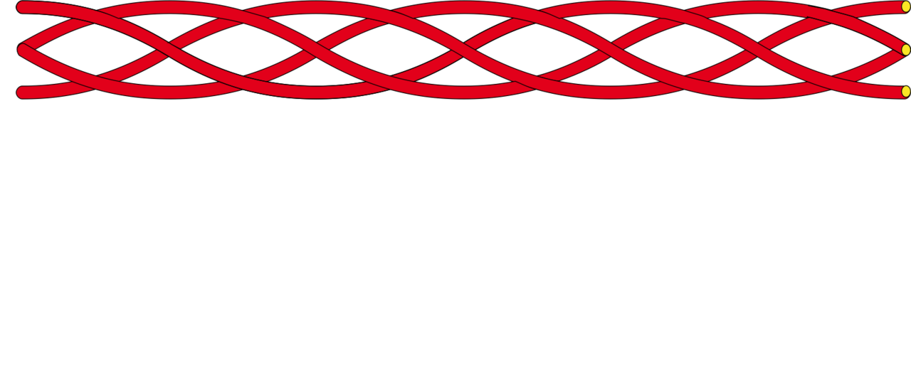
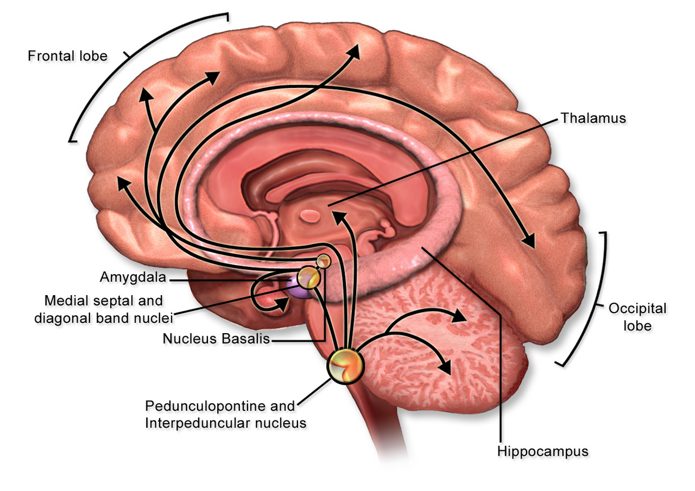
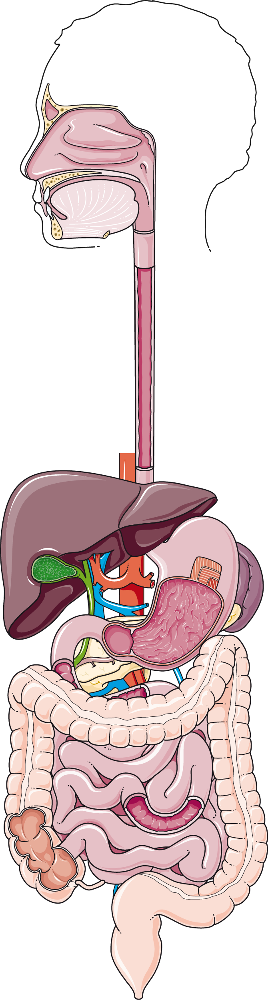
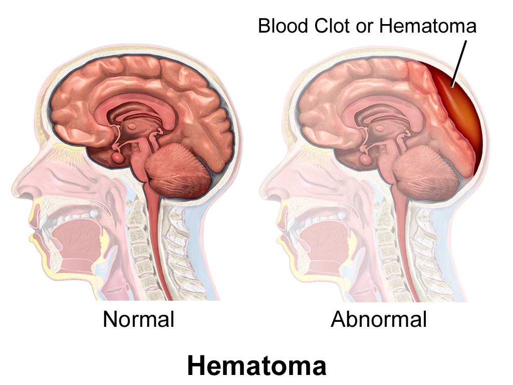
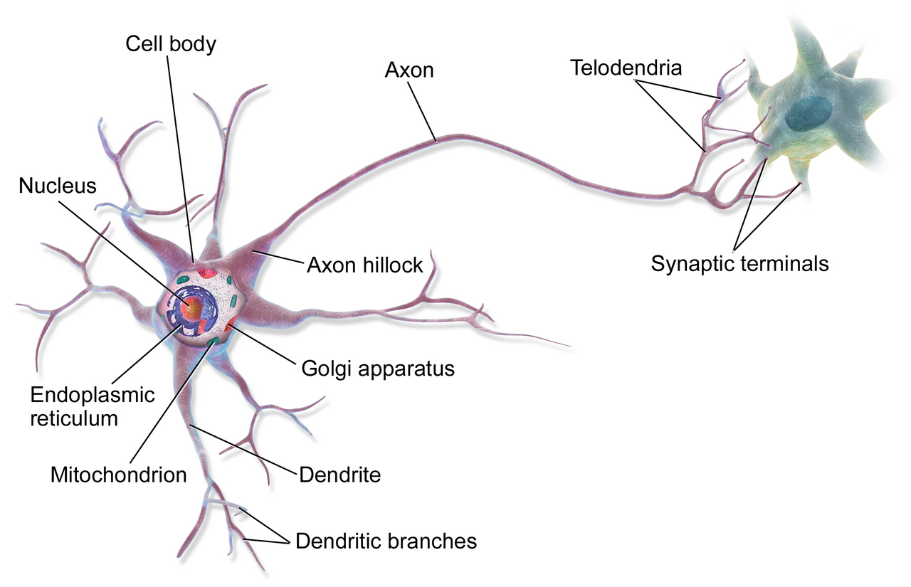

Muscle Tissue and Nervous Tissue
Muscle and nerve are the body’s two excitable tissues. We study them together because neither one makes sense alone. A neuron is a cell built to move charge fast and precisely. A muscle fiber is a cell built to turn the chemical energy of ATP into force. Between them sits a chemical synapse. Its only job is simple. It turns a voltage change in one cell into a voltage change in another. In this module you follow the signal all the way down. An electrical event in a motor neuron releases acetylcholine. Acetylcholine depolarizes the muscle membrane, which means it makes the inside less negative. That opens calcium channels in the sarcoplasmic reticulum, the calcium store inside the cell. Calcium then unblocks the actin filament so myosin can pull. Then you follow it back up. You learn how force is graded and how the tissue pays for it. You learn how smooth and cardiac muscle solve the same problem in their own ways. And you learn how nervous tissue holds a resting voltage in the first place.
By the end of this module you can
- Explain how the sliding-filament layout of the sarcomere turns cross-bridge cycling into shortening. Say where ATP binds and where it is split.
- Put the four steps of the cross-bridge cycle in order. Predict what happens when there is no ATP (rigor).
- Trace excitation–contraction coupling from the neuromuscular junction through the T tubule, DHP receptor and ryanodine receptor. It ends with calcium inside the cell rising from about 0.1 µM to 10 µM.
- Describe the two ways whole-muscle force is graded. They are motor unit recruitment (the size principle) and frequency summation up to tetanus. Read a length–tension curve and say why it has that shape.
- Compare the three ATP-making systems of muscle by power and by how long each lasts. Link fiber type (I, IIa, IIx) to fatigue resistance.
- Contrast skeletal, cardiac and smooth muscle. Look at the calcium source, the calcium receptor protein, electrical coupling, and the ability to tetanize.
- Explain the resting membrane potential as a leak-and-pump steady state. Use the Nernst equation to predict equilibrium potentials for potassium and sodium.
- Tell graded potentials apart from action potentials. Explain spatial and temporal summation at the trigger zone.
- Name the parts of the stretch reflex as a negative-feedback loop. They are the variable, the sensor, the integrator, the effector and the response.
Section 1The Sarcomere: An Engine That Shortens by Sliding

Why the striations are the mechanism, not the decoration
A skeletal muscle fiber is one huge cell with many nuclei. It is commonly 10 to 100 µm across. In a long muscle such as the sartorius it runs up to 30 cm end to end. Almost the whole cell is packed with myofibrils. These are round bundles about 1 to 2 µm across. They run the full length of the fiber. Each myofibril is a chain of sarcomeres laid end to end. The sarcomere is the smallest part of the cell that can do the job. It is the piece that shortens.
The stripes you see under the microscope are not a staining trick. A sarcomere runs from one Z disc to the next. At rest that is roughly 2.0 to 2.2 µm. Thin filaments of actin anchor to each Z disc and point inward. They are about 1.0 µm long. Thick filaments of myosin float in the middle, tied to the M line. They are about 1.6 µm long. The dark A band is exactly as long as the thick filament. The light I band holds thin filament only. The H zone holds thick filament only. Every band is a statement about overlap. That is why the bands change in a predictable way during contraction. The A band never changes width. The I band and H zone both narrow, and they can vanish.
That is the whole of the sliding-filament theory. The filaments do not get shorter. They slide past one another and pull the Z discs toward the M line. Thousands of sarcomeres sit in a row along a myofibril. So a small percent of shortening in each one adds up. A sarcomere going from 2.2 to 1.8 µm shortens about 18 percent. A 30 cm muscle shortening 18 percent moves a bone about 5 cm. A third protein, titin, runs from Z disc to M line like a tiny spring. It keeps the thick filament centered. It also gives most of the passive tension you feel when you stretch a relaxed muscle.
The cross-bridge cycle: four steps and one ATP
Each thick filament carries roughly 300 myosin molecules. Each myosin has two round heads that point outward toward the thin filament. A head is two things at once. It is an actin-binding site. It is also an ATPase, an enzyme that splits ATP. That double identity is the engine. The cycle has four steps. Learn them in the order the chemistry actually happens.
1. Cocking. Myosin splits ATP into ADP and inorganic phosphate, but it keeps hold of both. The energy that comes free is stored as strain in the head. The head swings into a cocked position of roughly 90 degrees. 2. Cross-bridge formation. If the binding site on actin is uncovered, the cocked head attaches. That attachment is a cross-bridge. 3. The power stroke. Phosphate leaves. The head pivots to about 45 degrees. It drags the thin filament toward the M line by roughly 10 nm. ADP leaves at the end of the stroke. 4. Detachment. A fresh ATP binds the head. The head loses its grip on actin and lets go. Now it is ready to be cocked again.
Notice the accounting. One ATP is used per head per cycle. It is split in step 1, but its energy is spent in step 3. The ATP that binds in step 4 is not split. It is simply needed before the head can let go. At any moment only some heads are attached. So the filament never slips backward. Some heads always hold on while others reset. It works the way a rope is pulled hand over hand. The attached, force-making part of the cycle lasts only a few milliseconds. Even so, a head runs the whole cycle five to fifty times per second. That is during a steady contraction.
Rigor mortis is the clean experiment
If letting go needs ATP, then a cell with no ATP should be stuck holding on. That is exactly what rigor mortis is. After death, oxidative phosphorylation stops. The leftover ATP is used up within a few hours. Calcium also leaks out of the sarcoplasmic reticulum into the cytosol, the fluid inside the cell. It leaks because the pump that clears it needs ATP too. Binding sites stay uncovered. Heads stay bound. No head can release. Stiffness starts about 3 to 4 hours after death. It peaks near 12 hours. It fades over 48 to 72 hours, and only because lysosomal enzymes digest the proteins themselves. A warm room and hard exercise before death both use ATP up faster. Both make stiffness start sooner. Investigators use that fact to estimate the time of death.
The clinical lesson matters more than the forensic one. Any condition that badly limits the ATP supply to muscle makes it stiff and contracted. It does not make it limp. That is one reason muscle short of blood flow hurts and hardens. It does not simply go slack.
Muscle shortens because stiff filaments slide into greater overlap. A repeating myosin cycle drives that sliding. It costs one ATP per head per stroke. The ATP is split to cock the head. A new one is needed again before the head can let go.
Section 2From Nerve to Calcium: The Junction and Excitation–Contraction Coupling

The neuromuscular junction is built with a huge safety factor
A somatic motor neuron meets the muscle fiber at one special synapse. It is the neuromuscular junction (NMJ). The action potential reaches the axon terminal, and voltage-gated calcium channels open. Calcium flows down a steep gradient. Outside the cell it sits at about 1.2 mM. Inside it sits at about 0.0001 mM. That local calcium spike makes synaptic vesicles fuse with the membrane. The SNARE proteins do the fusing. Each vesicle dumps roughly 5,000 to 10,000 molecules of acetylcholine (ACh) into the cleft. The cleft is only 20 to 50 nm wide. A single nerve impulse releases on the order of 100 to 200 vesicles.
ACh crosses in well under a millisecond. It binds nicotinic ACh receptors. These are not G-protein-coupled. They are ligand-gated ion channels. Two ACh molecules must bind before the pore opens. The open pore passes both sodium and potassium. At rest the push on sodium is far bigger than the push on potassium. So the net current flows inward and the end plate depolarizes. Remember the current rule I = g × (Vm − Eion). At a resting Vm of about −90 mV, sodium is 150 mV away from its equilibrium potential. Potassium is already close to rest. So sodium wins.
The end-plate potential that follows is huge for a synapse. It is about 70 mV, measured before it can set off a spike. Only about 35 mV of depolarization is needed to reach threshold. That is the move from roughly −90 mV to −55 mV. So there is about a twofold voltage margin. The nerve also releases several times more acetylcholine than the minimum needed. Together those margins are the safety factor. It is why a healthy NMJ works one-to-one. Every motor neuron action potential makes a muscle action potential. Acetylcholinesterase in the basal lamina then ends the signal. It breaks ACh down within about 1 millisecond. The end plate can then reset and wait for the next impulse.
Excitation–contraction coupling: turning voltage into calcium
The muscle action potential now sweeps along the sarcolemma at 3 to 5 m/s. The sarcolemma is the muscle cell membrane. The middle of a 50 µm fiber is deep. A surface signal cannot reach it in time by diffusion. The fix is anatomical. The sarcolemma dives into the fiber as transverse (T) tubules. These are tubes of surface membrane that carry the action potential into the core. They wrap each myofibril at the A–I junctions. Two end sacs of the sarcoplasmic reticulum (SR) flank each T tubule. The SR is the calcium store. The three structures together make a triad.
The T-tubule membrane holds the dihydropyridine (DHP) receptor, a voltage sensor. Facing it in the SR membrane sits the ryanodine receptor (RyR1), a calcium-release channel. In skeletal muscle the two are linked by direct contact. The T-tubule membrane depolarizes, the DHP receptor changes shape, and it physically pulls RyR1 open. No calcium has to enter from outside the cell. This really is special to skeletal muscle. It is why skeletal muscle keeps contracting for a while in a calcium-free bath. Cardiac muscle stops within a few beats.
SR calcium pours into the cytosol. Free calcium jumps roughly 100-fold. It goes from about 0.0001 mM (0.1 µM) at rest to about 0.01 mM (10 µM). Calcium binds troponin C. Troponin drags tropomyosin off the myosin-binding sites on actin. Cross-bridge cycling begins. So muscle is not switched on by myosin. Myosin is always willing. Muscle is switched on by taking a block off actin. That is why we call this actin-linked regulation, or thin-filament regulation. The gap between the action potential and visible tension is the latent period. It is only about 2 milliseconds.
Relaxation costs energy too
Relaxation is not passive. The action potential ends and RyR1 closes. SERCA, the SR calcium-ATPase, starts pumping calcium back into the SR. It pumps against a gradient of about 10,000 to one. It uses one ATP for every two calcium ions. Inside the SR, calsequestrin holds calcium loosely. Huge amounts can be stored that way. The free level never rises enough to stall the pump. Calcium in the cytosol falls back below about 0.1 µM. Troponin lets go of calcium. Tropomyosin slides back over the binding sites. Cross-bridges cannot re-form. Titin and the connective tissue frame then recoil. That returns the sarcomere toward its resting length.
Two clinical points follow straight from that. First, a large share of muscle ATP goes to SERCA, not to myosin. It is roughly a quarter to a third. That is part of why shivering makes heat so well. Second, the RyR1 channel can be faulty and leaky. That is the inherited risk for malignant hyperthermia. Certain anesthetics then trigger runaway calcium release. The patient turns rigid, burns ATP wildly, and body temperature can climb 1 degree Celsius every 5 minutes. The antidote is dantrolene. It works by blocking RyR1 directly. You can now explain that drug from first principles.
Excitation–contraction coupling turns a voltage change into a calcium surge. Calcium inside the cell rises 100-fold. Calcium works by unblocking actin. Relaxation is not free. It needs ATP to pump that calcium back into the sarcoplasmic reticulum.
Section 3Grading Force: Motor Units, Frequency, Length and Fuel

Motor units and the size principle
One muscle fiber does not grade its own force much. Its action potential is all-or-none. Its calcium release is close to full. Whole-muscle force is graded at the level of the motor unit instead. A motor unit is one alpha motor neuron plus every fiber it supplies. The number of fibers per unit matches the precision the job needs. The muscles that aim the eye have units of roughly 5 to 10 fibers. The muscles of the larynx are just as fine. The gastrocnemius, the big calf muscle, only needs to push. Its units hold 1,000 to 2,000 fibers. Small units give fine control. Large units give coarse, powerful steps.
Adding force by switching on more units is recruitment. It follows a strict order called the size principle. Motor neurons are recruited from the smallest cell body to the largest. Small neurons have higher input resistance. So the same synaptic current moves their voltage further. That is I = V/R rearranged as V = I × R. They reach threshold first. Helpfully, small motor neurons supply small, slow, fatigue-resistant fibers. So the system uses its cheapest fibers for light postural work on its own. It calls in the powerful, tiring ones only when the load demands it. Willpower and training do not change the recruitment order. They change only the firing rate and the endpoint.
Summation and tetanus: why a twitch is not the working unit
A single stimulus makes a twitch. It has a latent period of about 2 ms, then a contraction phase, then a relaxation phase. All together that is roughly 20 ms in a fast fiber. It is up to 100 ms in a slow one. Compare that with the muscle action potential. It is over in 1 to 5 ms. The mismatch is the key. The electrical event finishes long before the mechanical one. So a second action potential can arrive early. Calcium is still high and tension is still there. Tension then adds up. That is wave summation.
Raise the stimulus frequency and twitches fuse. At around 20 to 30 Hz you get incomplete (unfused) tetanus, a bumpy plateau. Above roughly 50 Hz in fast fibers you get complete tetanus, a smooth plateau. That plateau makes three to four times the tension of a single twitch. Tetanus is not a disease state. It is the normal working state of skeletal muscle. The mechanism is simple. SERCA cannot clear calcium between stimuli. So calcium in the cytosol stays high, troponin stays loaded, and every binding site stays open. In the living body, motor units also fire out of step with each other. That smooths whole-muscle force even more.
Length–tension: force depends on overlap
Active tension is a direct readout of how many cross-bridges can form. So it depends on sarcomere length. The best length is about 2.0 to 2.2 µm. There every myosin head faces an actin binding site. The thin filaments stay out of each other’s way. Stretch the sarcomere past about 3.6 µm and overlap drops to zero. Active tension then falls to zero, no matter how much calcium is released. Squeeze it below about 2.0 µm and thin filaments from opposite ends overlap. They get in each other’s way. Squeeze below about 1.7 µm and the thick filaments jam against the Z discs. Tension falls steeply. The curve is an upside-down U. Its shape is pure geometry.
The body normally holds resting muscle very close to that best length. The skeleton limits how far a joint can travel. So you can usually ignore the falling limb of the curve in intact skeletal muscle. You cannot ignore it in the heart. There the rising limb of the same curve becomes the Frank–Starling relationship from Module 10. The more the ventricle fills, the closer its sarcomeres come to the best overlap. The harder it then contracts.
Paying for it: three energy systems and three fiber types
A resting muscle fiber holds only about 5 mmol of ATP per kilogram. That is enough for perhaps 2 to 3 seconds of all-out work. Three systems make more. Creatine phosphate sits at 20 to 25 mmol/kg. Creatine kinase hands its phosphate to ADP almost at once. That covers roughly the first 10 to 15 seconds. Anaerobic glycolysis then makes 2 ATP per glucose very fast. It can carry hard work for about 30 seconds to 2 minutes. The cost is a build-up of lactate and hydrogen ions. Oxidative phosphorylation gives about 30 to 32 ATP per glucose. It takes 30 to 60 seconds to get going, and oxygen delivery limits it. It powers everything past a couple of minutes.
| Fiber type | Main ATP source | Twitch speed / fatigue | Typical role |
|---|---|---|---|
| Type I (slow oxidative) | Oxidative. Many mitochondria, high myoglobin, red | Slow (about 100 ms). Very hard to tire out | Posture, soleus, steady low-force work |
| Type IIa (fast oxidative-glycolytic) | Both oxidative and glycolytic. Middling myoglobin | Fast (about 50 ms). Fairly hard to tire out | Walking, cycling, long repeated effort |
| Type IIx (fast glycolytic) | Glycolytic. Few mitochondria, low myoglobin, pale | Fastest (about 20 ms). Tires out in seconds | Sprinting, jumping, sudden top force |
Fatigue is worth naming exactly, because the popular story is wrong. Muscle fatigue is not caused by lactic acid burning the muscle. It is also almost never caused by literally running out of ATP. ATP rarely falls below 60 percent of the resting level, even in exhausting exercise. The cell shuts down before that. The real causes are a set of build-ups. Inorganic phosphate piles up and gets in the way of cross-bridge force. Hydrogen ions block key enzymes and upset calcium handling. Potassium piles up in the T tubules and blunts the action potential. Glycogen runs low. Drive from the nervous system fades too. Soreness that starts 24 to 72 hours later is tiny muscle damage and inflammation. It is not lactate. Lactate clears within about an hour.
Whole-muscle force is graded in two ways. You recruit more and larger motor units in a fixed small-to-large order. You also raise the firing rate until twitches fuse into tetanus. Maximum force is only on offer near the best filament overlap.
Section 4Smooth and Cardiac Muscle: Same Filaments, Different Control

Smooth muscle: cheap, slow, and built to hold
Smooth muscle cells are small spindles. They are 2 to 10 µm wide and 50 to 200 µm long. Each has one central nucleus and no stripes. The missing stripes are not from missing actin and myosin. Those filaments simply run at an angle. They attach to dense bodies scattered through the cell, not to lined-up Z discs. So when the filaments pull, the cell twists and balls up. It does not shorten along one axis. That is exactly what you want in the wall of a tube. Smooth muscle can shorten by up to 70 percent of its resting length. Skeletal muscle manages about 30 percent. That is how a hollow organ can empty almost completely.
The control chemistry is different in a way worth memorizing. Smooth muscle has no troponin. Calcium binds calmodulin instead, four calcium ions per molecule. The calcium–calmodulin complex switches on myosin light-chain kinase (MLCK). MLCK adds a phosphate to the myosin head. Only then can cross-bridges cycle. So regulation here is myosin-linked, not actin-linked. Relaxation needs myosin light-chain phosphatase to take that phosphate off. So the balance between kinase and phosphatase sets the tone, not calcium alone. Many drugs and second messengers work by shifting that balance rather than by changing calcium.
Calcium comes from two places. Some comes from a thin sarcoplasmic reticulum. Some comes from outside the cell through voltage-gated and ligand-gated channels. That is why calcium channel blockers relax blood vessel smooth muscle so well. Cycling is slow. The myosin ATPase is roughly ten times slower than the skeletal one. Slowness is an advantage here. Heads that have lost their phosphate can stay attached in the latch state. They hold tension for hours. The ATP cost is perhaps one three-hundredth that of the same skeletal contraction. That is how a blood vessel keeps its width all day. It is how a sphincter stays shut without tiring. Most smooth muscle is single-unit. Gap junctions couple the cells, so whole sheets contract together. Pacemaker cells often drive them. Autonomic nerves, hormones and local stretch adjust them rather than command them.
Cardiac muscle: a syncytium that must never tetanize
Cardiac muscle is striped like skeletal muscle and uses troponin like skeletal muscle. Three features are its own. First, the cells are short and branched. They join end to end at intercalated discs. Those discs hold desmosomes for mechanical strength and gap junctions for electrical continuity. So the atria act as one unit and the ventricles act as one unit. Each is a functional syncytium. Stimulate one cell and the whole chamber contracts. Second, roughly 1 percent of cardiac cells are autorhythmic pacemakers. Their resting potential is unstable. So the heart needs no nerve to beat. Autonomic input only changes the rate and the force.
Third, and most important, cardiac excitation–contraction coupling needs calcium-induced calcium release. A small amount of calcium enters through L-type channels. It comes in during the plateau of the cardiac action potential. That calcium binds RyR2 on the SR. RyR2 then releases the bulk of the calcium. This is genuine positive feedback. Calcium causes calcium release. Like all useful positive feedback in the body, it stops itself. It stays tightly bounded, and that is what makes it safe. It also makes cardiac contraction depend on calcium outside the cell. Skeletal contraction does not.
Cardiac muscle also has a long absolute refractory period. It runs roughly 200 to 250 milliseconds. That is almost as long as the contraction itself. So a second action potential cannot arrive while tension is still building. Summation and tetanus are therefore impossible. That is the point. A tetanized ventricle would never refill, and cardiac output would fall to zero. Here the failure to add twitches together is a safety feature. It is built into the electrical properties of the tissue.
| Feature | Skeletal | Cardiac | Smooth |
|---|---|---|---|
| Striations / Z discs | Yes, sarcomeres | Yes, sarcomeres | No. Dense bodies |
| Nuclei per cell | Many, at the edge | One or two, central | One, central |
| Calcium receptor | Troponin C (actin-linked) | Troponin C (actin-linked) | Calmodulin, then MLCK (myosin-linked) |
| Main calcium source | SR only. Mechanical DHP–RyR1 link | Trigger from outside plus SR (CICR) | Outside the cell plus a little SR |
| Electrical coupling | None. Each fiber has its own nerve ending | Gap junctions. A syncytium | Gap junctions in the single-unit type |
| Control | Voluntary. Somatic motor neuron | Involuntary. Autorhythmic | Involuntary. Autonomic, hormonal, stretch |
| Can it tetanize? | Yes, and normally does | No. Long refractory period | Steady tone through the latch state |
| Regeneration | Limited. Satellite cells | Essentially none | Good. Cells can divide |
All three muscle types slide actin past myosin. They differ in only three ways. Where calcium comes from, which protein it binds, and whether the cells are joined electrically. Those three differences explain every functional contrast between them.
Section 5Nervous Tissue: Cells, the Resting Voltage, and the Reflex Loop

Neurons are shaped by the job they do
The nervous system holds roughly 86 billion neurons. It holds about the same number of glial cells. A neuron’s shape states its function directly. Dendrites are short, branched and unmyelinated. That gives them a big surface for taking in thousands of synaptic inputs. One cortical neuron may receive 10,000. The soma holds the nucleus and the Nissl bodies, which are rough endoplasmic reticulum. It does the building work for a cell whose farthest process may be a meter away. The axon hillock is the trigger zone. It is packed with voltage-gated sodium channels and has the lowest threshold in the cell. It is the point where the summed input becomes an all-or-none output. The axon carries that output. The terminals turn it back into chemistry.
By shape, multipolar neurons are by far the most common. They have many dendrites and one axon. All motor neurons and interneurons are multipolar. Bipolar neurons are rare and specialized. They serve the retina, the smell epithelium and the inner ear. Pseudounipolar neurons carry sensory information in from the body. They have a single process that splits, so the signal skips the cell body. By job the sorting is simpler. Sensory (afferent) neurons carry information toward the central nervous system. Motor (efferent) neurons carry commands out. Interneurons sit between them and do the integrating. They are about 99 percent of all neurons.
Glia are not packing material
Neurons cannot work without glia. Glia outnumber neurons roughly three to one in the cerebral cortex. Across the whole brain the ratio is closer to one to one. Astrocytes are the most common CNS glia. They hold the blood–brain barrier together by making capillary cells form tight junctions. They mop up potassium outside the cell, so repeated firing does not shift the resting potential. They take up glutamate before it can poison neurons. They also hand lactate to busy neurons. Oligodendrocytes myelinate CNS axons. One cell can wrap segments of as many as 50 different axons. Microglia are the resident immune cells. They do not come from blood monocytes. They come from yolk-sac cells. Those cells seed the brain early in the embryo and then renew themselves in place. They eat debris and prune synapses. Macrophages made from monocytes are a separate group. They enter only when the blood–brain barrier is broken. Ependymal cells line the ventricles and make cerebrospinal fluid.
In the peripheral nervous system, Schwann cells myelinate exactly one segment of one axon. That difference from oligodendrocytes has real consequences. A Schwann cell can form a tube. That tube guides a cut peripheral axon back at about 1 to 5 mm per day. CNS axons largely cannot regrow. Satellite cells surround and support neuron cell bodies in peripheral ganglia. Demyelinating disease follows the same split. Multiple sclerosis attacks CNS myelin. Guillain–Barré syndrome attacks peripheral myelin.
| Glial cell | Location | Main physiologic job |
|---|---|---|
| Astrocyte | CNS | Blood–brain barrier, potassium and glutamate mopping, metabolic support |
| Oligodendrocyte | CNS | Myelinates many axons. Speeds up conduction |
| Microglia | CNS | Immune watch, clean-up, synapse pruning |
| Ependymal cell | CNS ventricles | Makes and circulates cerebrospinal fluid |
| Schwann cell | PNS | Myelinates one internode. Guides axon regrowth |
| Satellite cell | PNS ganglia | Controls the chemical setting around cell bodies |
The resting membrane potential is a leak-and-pump steady state
Every cell holds a voltage across its membrane. Excitable cells simply put it to work. A typical neuron rests at about −70 mV. A skeletal muscle fiber rests at about −90 mV. That means the inside is negative compared with the outside. Three facts produce it. First, concentration gradients. Potassium is roughly 140 mM inside and 5 mM outside. Sodium is roughly 15 mM inside and 145 mM outside. Second, selective permeability. At rest the membrane lets potassium through 25 to 100 times more easily than sodium. Potassium leak channels stand open. Third, anions inside that cannot leave. Proteins and phosphates are stuck there and cannot follow potassium out.
The Nernst equation gives the voltage at which a single ion would sit at equilibrium. At body temperature it is Eion = (61 / z) × log([ion]outside / [ion]inside) millivolts. For potassium that is about −90 mV. For sodium it is about +60 mV. For chloride it is about −70 mV. For calcium it is about +120 mV. The real resting potential sits near the potassium value, because potassium permeability rules. A small steady sodium leak drags it a few millivolts positive. The sodium–potassium ATPase then pumps 3 sodium out for every 2 potassium in. That costs one ATP per cycle. The pump adds only a few millivolts by itself. It is still essential, because it keeps the gradients up. The brain spends on the order of half its huge ATP budget on this pump alone. Block it with ouabain, or with poor blood flow, and the resting potential fades within minutes.
Two clinical rules fall out of the Nernst relationship. First, raise potassium outside the cell, say from 4.0 to 7.0 mM in hyperkalemia. The potassium equilibrium potential moves toward zero. So the resting potential depolarizes. Cells become more excitable for a short time. Then they stop responding, because sustained depolarization inactivates sodium channels. That is why hyperkalemia is deadly to the heart. Second, lower the calcium outside the cell. Sodium channels then open more easily at any given voltage. That produces the tetany and spasms of hypocalcemia. Calcium itself carries very little of the resting current.
Graded potentials, summation, and a reflex that closes the loop
Inputs arriving on dendrites and the soma make graded potentials. These are local voltage changes. Their size matches the size of the stimulus. Some depolarize, and we call those excitatory postsynaptic potentials. Some hyperpolarize, and we call those inhibitory. They all decay with distance. Current leaks out through the membrane as the signal spreads. So a 10 mV potential may be only 4 mV a fraction of a millimeter away. The distance over which it falls to 37 percent of its starting size is the length constant. It is typically 0.1 to 1 mm. So graded potentials cannot carry information far. That is what the action potential of Module 6 is for. Even so, graded potentials are the currency of integration.
Integration happens at the trigger zone, and it is arithmetic. Temporal summation adds inputs from the same synapse. They arrive in quick succession, before the first has faded. Spatial summation adds inputs that arrive at the same moment at different synapses. If the total at the axon hillock reaches threshold, near −55 mV, an action potential fires. If not, nothing happens. A neuron taking 10,000 inputs is running a nonstop weighted vote. Inhibitory inputs subtract from the total just as truly as excitatory ones add to it.
Muscle and nerve close a loop in the stretch (myotatic) reflex. It is worth naming every part in the standard negative-feedback words. The regulated variable is muscle length. The sensor is the muscle spindle. That is a bundle of intrafusal fibers wrapped in sensory endings. They fire faster the more the muscle is stretched. The afferent pathway is a large Ia sensory fiber. It is among the fastest in the body at 80 to 120 m/s. The integrator is the spinal cord. There that fiber synapses straight onto the alpha motor neuron. It is a monosynaptic arc, which is why the whole loop takes only about 20 to 40 milliseconds. The effector is the extrafusal muscle. The response is contraction. Contraction shortens the muscle and removes the very stretch that started it. Sensed change opposed. That is negative feedback in three words. Tap the patellar tendon and you are testing this loop. A brisk reflex suggests loss of descending inhibition. An absent one suggests a break somewhere in the arc.
Nervous tissue holds a resting voltage set mainly by potassium permeability. The sodium–potassium pump keeps it going. The trigger zone then adds up graded potentials that fade as they spread. That arithmetic lets a reflex loop oppose the change that provoked it.
The module in one breath
Muscle and nerve are the excitable tissues. Their partnership is a chain of conversions. A motor neuron holds a resting potential near −70 mV. Potassium leaks out through open channels, and the sodium–potassium ATPase keeps the gradients up. Graded inputs are added at the axon hillock. If the total reaches about −55 mV, an impulse is sent. At the neuromuscular junction that impulse lets calcium in and releases acetylcholine. The end-plate potential that follows is about twice as big as threshold needs. That safety factor makes transmission reliable. Its failure is what myasthenia gravis is. The muscle action potential runs into the fiber along T tubules. There the DHP receptor mechanically opens RyR1. Calcium in the cytosol rises 100-fold, to about 10 µM. Calcium binds troponin. Tropomyosin slides aside. Myosin heads cycle, one ATP each. The ATP is split to cock the head. A new one is needed again to release it. Force is graded by recruiting motor units smallest first. It is graded again by firing fast enough to fuse twitches into tetanus. It peaks near 2.0 to 2.2 µm of sarcomere length, where overlap is best. Cardiac and smooth muscle run the same filaments under different control. The heart uses calcium-induced calcium release and a long refractory period. Vessels and organs use calmodulin and the energy-cheap latch state. Relaxation, in every case, is active.
Words worth knowing
| Term | What it means |
|---|---|
| Sarcomere | Contractile unit from Z disc to Z disc, about 2.0 to 2.2 µm at rest. It is the piece of the cell that shortens. |
| Sliding-filament theory | Contraction happens because thin and thick filaments slide into greater overlap. Neither filament changes length. |
| Cross-bridge cycle | Cock, attach, power stroke, detach. One ATP per myosin head per cycle. |
| Titin | Elastic protein running from Z disc to M line. It centers the thick filament and supplies passive tension. |
| Troponin / tropomyosin | The regulatory pair on the thin filament. Calcium binds troponin C, which moves tropomyosin off the myosin-binding sites. |
| Neuromuscular junction | The synapse between a somatic motor neuron and a muscle fiber. It uses acetylcholine on nicotinic receptors. |
| End-plate potential | Local depolarization of about 70 mV at the motor end plate. That is roughly twice the 35 mV needed to reach threshold. |
| T tubule | A dip of sarcolemma that carries the action potential into the fiber. It forms a triad with two SR cisternae. |
| DHP and ryanodine receptors | The voltage sensor in the T tubule. Direct contact links it to the SR calcium-release channel in skeletal muscle. |
| SERCA | The sarcoplasmic reticulum calcium-ATPase. It pumps 2 calcium ions back into the SR per ATP, which produces relaxation. |
| Motor unit | One alpha motor neuron plus every fiber it supplies. Units run from about 5 fibers in eye muscles to 2,000 in the calf. |
| Size principle | Motor neurons are recruited smallest to largest. So slow, fatigue-resistant fibers are used first. |
| Tetanus | A fused, sustained contraction from fast stimulation. It makes three to four times twitch tension and is normal in skeletal muscle. |
| Length–tension relationship | Active force depends on filament overlap. It peaks near 2.0 to 2.2 µm of sarcomere length. |
| Latch state | Smooth muscle cross-bridges that hold tension after losing their phosphate. They sustain tone at very little ATP cost. |
| Calcium-induced calcium release | The cardiac mechanism where a small calcium entry from outside triggers a large SR release. It is physiologic positive feedback. |
| Resting membrane potential | The steady voltage across the membrane, about −70 mV in neurons and −90 mV in skeletal muscle. Potassium permeability mainly sets it. |
| Nernst equation | Eion = (61 / z) × log([outside] / [inside]) mV at 37 degrees Celsius. It gives an ion’s equilibrium potential. |
| Graded potential | A local voltage change on dendrites or soma. It varies in size and fades with distance. It is the input to integration. |
| Muscle spindle | The intrafusal stretch sensor. Its Ia afferent drives the monosynaptic stretch reflex, which opposes changes in muscle length. |